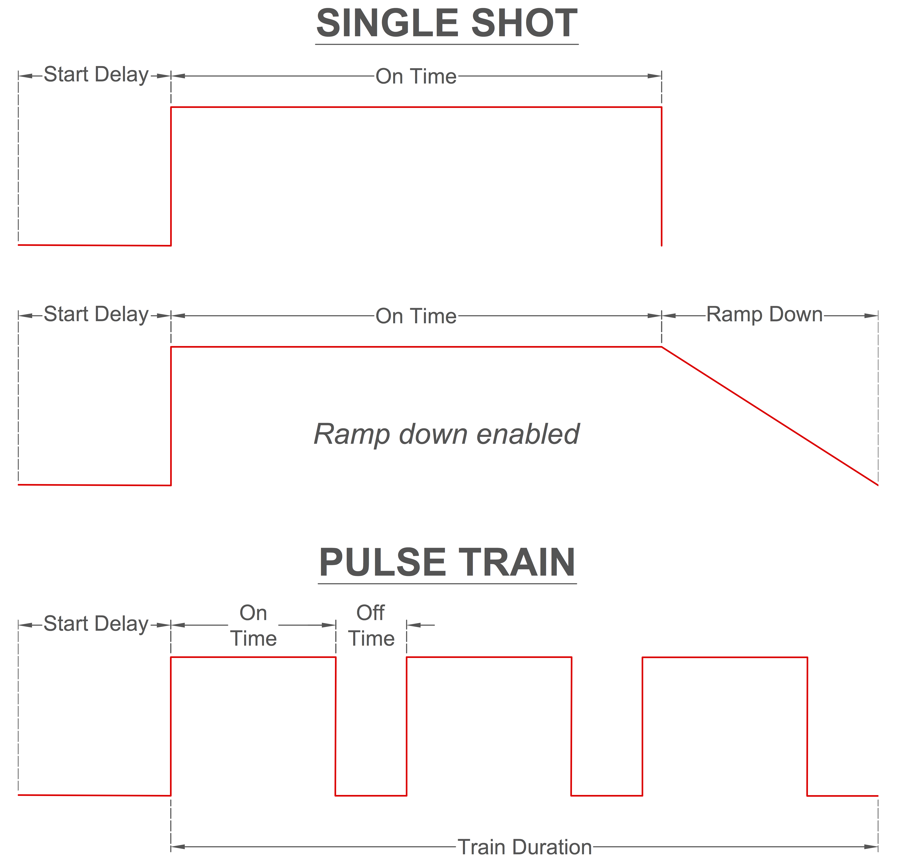

Xavier¶

Installation¶
System Requirements¶
- Windows XP or newer
Download Instructions¶
- Download and install the USB-Serial Windows Driver Installer
- Download and unzip
Xavier Deployment Folder - Open up Xavier.exe

- Setup a default directory that data will be saved to.
Settings¶
Access Xavier Settings by navigating to File->Settings.. or by pressing Ctrl + ,

Note
Settings cannot be changed in the middle of a session
Edit Default Save Directory¶
- Click
Change Directoryto setup a new save location.

- Navigate to an existing folder or create a new folder for future data.

- Finally, click Select Folder. The “Current Directory” will reflect updated save path


Edit Session Setup Lists¶


Labeling COM Ports¶
When multiple usb devices are connected to the computer, it can be hard to keep track of which COM Port belongs to which device. To minimize confusion when connecting to serial ports, Xavier allows you to label COM Ports.

Adding Labels¶
- From the dropdown box, select the COM Port you want to add a label to
- Type the new label into the textbox and click
Add/Edit Label(or pressEnter)

Editing Labels¶
- Double-click the labeled COM Port from the list that you want to edit. A label editing dialog will appear.
- Type the new label into the textbox and click
Change Label

Running an Experiment¶
Session Setup¶
- Fill out experimental setup information.

Note
The rig and rat lists can be edited
- Select a Base Station Serial Port.

Note
The COM port drowdown list can be labeled
- Click
Connect to Base Station

- A startup sequence dialog box will appear. Xavier will try to establish a connections with Base Station and Cerebro. Once connected, Xavier will make sure that the laser diode power settings on Cerebro match laser diode powers for the rat/implant that was selected in step 1. If there are red X’s, make sure the correct Serial Port was selected, make sure Cerebro has been turned on, and then click
Retry

- If everything on the list is checked, click
Start Sessionto begin the session.

Edit Waveform Parameters¶
Five waveform parameters (Start Delay, On Time, Off Time, Train Duration, Ramp Down) can be wirelessly changed throughout the session. The user can make changes using either a Single Shot mode with an optional ramp down or Pulse Train mode. Non-applicable parameters are automatically set to zero depending on the options selected.
- Check the Cerebro Status to determine whether the waveform parameters are set as you wish.

{kind=link}
{kind=link}
- If you would like to modify the parameters, select “Single Shot” or “Pulse Train”, then modify the parameters in the “Waveform Parameters” section

- Click
Send New Waveform Parameters.
Ending a Session and Saving Data¶
- When you are ready to end the session click
Save Session